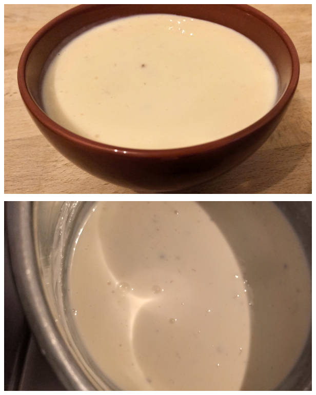

Kochkäse
Quelle und weitere Informationen: https://github.com/OMerkel/recipes
Zum Rezepte-Index 🍲

Zutaten
-
750 g Quark
-
250 ml süße Sahne
-
50 g Butter
-
1 TL Natron
-
1 TL Salz
-
2 EL Kümmel
Zubereitung
-
Quark in mit Leinentuch ausgelegten Sieb geben und 3 bis 4 Stunden abtropfen lassen.
-
Durch Auswringen weitere Restflüssigkeit verringern.
-
Quark in einer Schüssel bei Zimmertemperatur weitere 2 bis 3 Stunden ruhig stehen lassen.
-
Nach Ruhezeit Quark, Sahne, Kümmel und Salz in einem großen Topf vorsichtig erhitzen.
HINWEIS Die Temperatur im Topf darf dabei 42 °C nicht überschreiten.
-
Butter stückeln und unterrühren bis sich die eingedickte Masse vom Topfboden gelöst hat.
-
Natron hinzugeben. Unter Kohlensäurebildung vergrößert sich das Volumen der Masse.
-
Sobald die Kohlensäure weitestgehend aus dem Kochkäse entwichen ist, wird mit Salz und nach Wunsch auch Kümmel abgeschmeckt.
-
Kochkäse vollständig abkühlen lassen.
LAGERUNG Gekühlt etwa eine Woche haltbar.
TIPP Gibt man gewärmten Kochkäse auf ein und zu einem panierten Schnitzel mit Bratkartoffeln, wird es als Odenwälder Schnitzel oder Kochkässchnitzel bezeichnet.